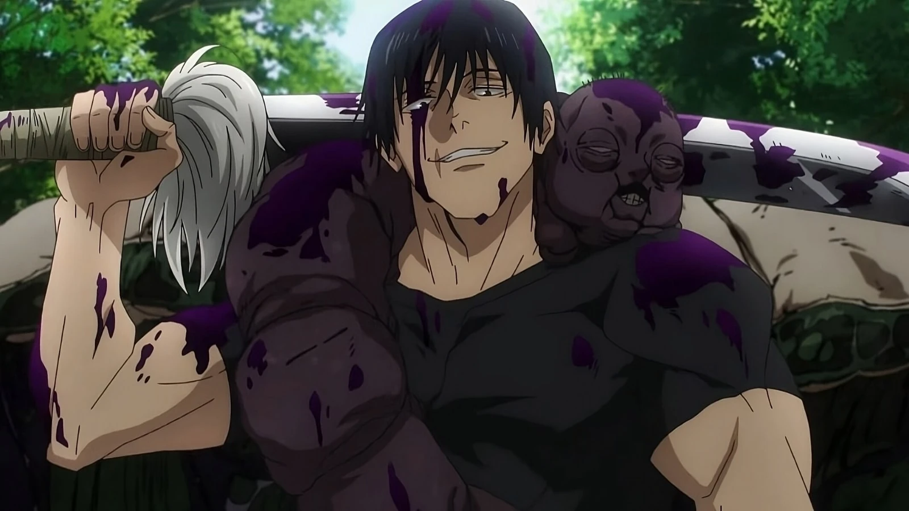

Who is Toji Fushiguro
Toji Fushiguro is a legendary assassin from Jujutsu Kaisen known for hunting down jujutsu sorcerers. Despite lacking cursed energy, he possesses superhuman physical abilities due to a rare condition called Heavenly Restriction.
Originally born into the powerful Zenin Clan, Toji was treated as worthless because he could not use cursed energy — the very thing that defines a sorcerer. Instead of accepting humiliation, he left the clan and built a reputation in the underground world as a mercenary capable of killing elite sorcerers. He eventually took the surname Fushiguro, distancing himself from the clan that rejected him.
With pure physical ability, unmatched combat instinct, and ruthless efficiency, Toji earned a legendary reputation as the "Sorcerer Killer". His story is not just about strength — it's about rejection, rebellion, and the rise of an outcast who changed the balance of power.
Character Profile

|
|
|---|---|
| Name | Toji Fushiguro, Toji Zenin (Former) |
| Alias | Sorcerer Killer |
| Affiliation | Formerly of the Zenin Clan |
| Speciality | Heavenly Restriction |
The Zenin Clan's Rejection
The Zenin Clan values power above everything. Members are judged by their cursed techniques and energy, and those without it are considered failures. Toji, who had no cursed energy at all, became the ultimate embarrassment for the clan. He was mocked, ignored, and treated as if he didn’t belong.
But the clan failed to understand that Toji possessed something far rarer than cursed energy. Because of his Heavenly Restriction, all the power that might have gone into cursed energy instead transformed his body into a weapon. The clan rejected him.
Heavenly Restriction: Curse or Blessing?
In Jujutsu Kaisen, Heavenly Restriction is a binding condition placed on someone at birth that sacrifices one ability in exchange for another. For Toji, the trade-off was extreme.
- Zero cursed energy
- Unmatched physical strength
- Extraordinary speed and reflexes
- Enhanced senses capable of detecting curses
This allowed him to move in ways that sorcerers could barely track. Because he had no cursed energy signature, enemies could not sense his presence easily. In battles where sorcerers relied on sensing cursed energy, Toji was practically invisible. This made him the perfect assassin.
The Sorcerer Killer
Toji didn’t just survive in the sorcerer world. He dominated it. Using cursed tools and his extraordinary physical power, he became known as the Sorcerer Killer — a man capable of defeating even the strongest jujutsu users.
One of his most infamous missions involved targeting Riko Amanai, the Star Plasma Vessel protected by Satoru Gojo and Suguru Geto. At the time, Gojo was already considered a prodigy. Yet Toji managed to do something almost unimaginable. He defeated Gojo. For a brief moment in history, the strongest sorcerer in the world was brought down by a man with no cursed energy at all.
Weapons of a Master Assassin
Unlike most sorcerers, Toji relied heavily on cursed tools rather than innate techniques. Some of his most iconic weapons include:
- Inverted Spear of Heaven: A legendary weapon capable of nullifying cursed techniques, making it extremely dangerous even against the most powerful sorcerers.
- Chain of a Thousand Miles: A weapon that extends infinitely as long as its end is hidden, allowing for unpredictable attacks.
- Playful Cloud: A special-grade cursed tool that relies purely on physical strength — perfect for someone like Toji.
- Split Soul Katana: A blade capable of cutting through inanimate objects and bypassing durability by targeting the soul.
Personality
Toji often appears calm, detached, and ruthless. Money motivated most of his jobs, and he rarely showed emotional attachment. However, beneath the cold exterior lies a much more complicated character.
Toji carried deep resentment toward the Zenin clan and the jujutsu world that rejected him. Yet he still cared — in his own way — about his son Megumi. Before his death, Toji revealed that he had sold Megumi to the Zenin clan, believing that the boy’s talent would guarantee him a better future. It was a twisted but genuine act of fatherhood.
Legacy: Breaking the Jujutsu System
Even after his death, Toji’s influence remained powerful. His actions directly shaped the growth of Gojo and Geto, changing the future of the jujutsu world.
Through pure physical ability and ruthless determination, he reached a level where even elite sorcerers feared him. Toji proved something revolutionary: Cursed energy is not the only path to power.
Why Fans Love Toji?
- A Power Without Cursed Energy: Despite having zero cursed energy, Toji dominates battles through pure physical ability.
- Unmatched Combat Skills: His speed, reflexes, and weapon mastery make every fight scene intense and memorable.
- The Legendary "Sorcerer Killer": His reputation for defeating elite sorcerers made him one of the most feared figures in the jujutsu world.
- A Complex and Tragic Past: Being rejected by the Zenin clan adds emotional depth to his ruthless personality.
- Pure Badass Presence: His calm confidence and ruthless fighting style make him instantly captivating whenever he appears.
Conclusion
Toji Fushiguro is more than just a powerful fighter. He represents rebellion against a rigid system that values only one kind of strength. Born powerless in a world obsessed with cursed energy, he forged his own path and became a legend feared by the very society that rejected him.
From an unwanted child of the Zenin clan to the infamous Sorcerer Killer, Toji’s journey proves that sometimes the greatest power comes from defying the rules entirely.